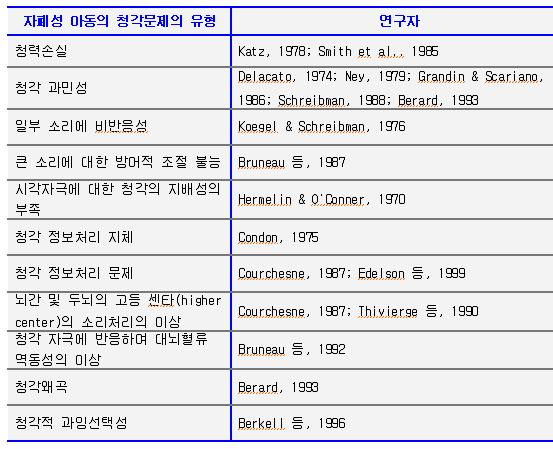

자폐성 아동의 청각 문제는 널리 알려져 있으며, 자폐증의 주요 증상 중 하나입니다. 청각 역기능은 언어이해 및 말하기의 문제, 행동문제, 주의력 문제 등 여러 문제와 관련성이 있습니다. 연구결과에서 자폐성 아동의 청각문제는 다양한 유형이 있습니다.

<?xml:namespace prefix = o ns = "urn:schemas-microsoft-com:office:office" />
1) 자폐성 아동의 청력손실
자폐성 아동의 청력손실 출현율은 일반아동이나 정신지체아동 보다 상당하게 높은 편이며, 중이염 발생율과 전음성 청력손실도 높은 편입니다. 자폐성 아동이 일반아동이나 다른 장애아동보다 청력손실이 크다는 연구결과들이 있습니다.
<관련연구>
(1) Smith 등(1985):
자폐성 아동의 전도성 청력의 손실 주장.
(2) Katz(1978):
청각적 전도성의 결함으로 주의력 감소 주장.
(3) Konstantareas 등(1987):
자폐성 아동이 일반 보다 귀감염 사건이 많고, 귀감염은 보다 청력손실과 관련.
(4) Rosenhall 등(1999):
자폐성 아동의 상당수에서 중이염이 발견, 중이염은 청력손실과 관련.
(5) Smith 등(1988):
일반아동, 학습장애 아동, 자폐성 아동을 대상으로 전음성 청력손실을 연구.
자폐성 아동의 전음성 청력손실이 가장 컸음, 만성 중이염은 전음성 청력손실과 관련.
(6) Minshew(1991):
대상자의 상당수에서 감각신경성 청력손실이 나타남.
(7) Student와 Sohmer(1978):
청각뇌간 반응연구에서, 자폐성 아동의 주변청력손실(peripheral hearing loss) 주장.
(8) Skoff 등(1986):
조사대상 자폐성 아동의 44-63%가 청력손상.
(9) Klin(1993):
170명의 자폐성 아동 중 33-46%가 청력이상의 증거.
(10) Taylor 등(1982):
약 30-30% 청력이상의 증거.
(11) Rosenhall 등(1999):
조사 대상자의 13%의 청력손실.
199명의 자폐성 아동 및 청소년을 대상으로 10여 년에 걸쳐 청각을 평가.
연구결과, 경도~중등도의 청력손실 7.9%, 한쪽 귀에만 심한 청력손실 1.6%, 심한 양측 귀 청력손실이나 농 3.5%.
(12) Jure 등(1991):
청력손상 아동들 중에서 자폐성 아동의 비율이 5.3%.
2) 자폐성 아동의 청각과민
청각과민증은 자폐성 아동의 주요 특성중의 하나이며, 자폐성 아동의 약 30%-40% 이상이 청각과민증을 보이고 있습니다. 베라르 박사는 많은 자폐성 아동에게 AIT를 실시하고 얻은 결론에서, 자폐성 아동의 가장 중요하고 주된 청각적 이상반응은 청각과민이라 하였습니다. 과민청각의 경우, 인접 주파수와의 민감성의 차이로 인한 청각왜곡 현상을 초래할 수 있습니다.
어떤 특정 주파수의 소리에 고통이나 불편을 가지는 것을 hypersensitive hearing이라 하고, 생활의 전반적인 소리에 극심한 고통을 가지는 것을 hyperacusis라고 합니다. 청각과민의 원인에는 극히 큰 소리에 노출, 귀나 뇌간에 외상, 약물부작용, 마그네슘의 결함 등이 있습니다.
<관련연구>
(1) Schreibman(1988):
청각과민의 경우 고통스러운 자극은 무시하면서 선호하는 특정 자극에만 주의를 주는 경향.
(2) Berard(1993):
강한 소리에 못 견디고 비명을 지르거나 두 손으로 귀를 막고 시끄러운 소리에서 도주.
(3) Klein 등(1990):
보통 사람에게는 위협적이지 않고 시끄럽지도 않는 소리에 지속적으로 과장된 반응이나 불평.
(4) Delacato(1974); Ney 등(1979); Grandin & Scariano(1986); Vicker(1993); Rimland(1994):
청각이상 중 특히 청각과민이 상당수의 자폐인에게 영향.
(5) Rimland & Edelson(1992, 1994):
자폐아동의 40% 정도가 청각과민.
(6) Vicker(1993):
자폐성 아동 57.5% 소리에 민감, 38.6% 평범한 일상 환경음에도 민감, 9.4%는 때때로 환경음에 민감.
<자폐인 동물학 교수 Grandin(1988)의 회고내용>
“소음은 나에게 주요 문제였습니다. 시끄러운 소음이나 혼란스런 소음에 직면했을 때 나는 그 소리들을 방어적으로 통제할 수 없었습니다. 나는 그 소리를 끄고 가리고 멀리하거나, 움츠려 들거나, 공포스럽게 들어야 했습니다. 나는 그 소리의 맹습을 피하기 위해 흔히 움츠려 들고 세상과 벽을 쌓았습니다.”
3) 자폐성 아동의 청각왜곡
청각왜곡은 소리자체를 듣는 데는 문제는 없으나 소리를 사실과 다르게 듣게 되는 것입니다. 소리가 더 약하거나 더 크게, 울리게, 찢어지게 등으로 실제와 다르게 들리는 현상입니다.
청각왜곡은 대부분 큰 소리에 노출, 청각에 유해한 약물복용, 선천적 원인, 노화 등으로 인한 내이의 손상( 달팽이관의 이상) 등으로 일어납니다.
달팽이관의 이상은 인접 주파수와의 청력역치의 심한 차이, 양쪽 귀 청력의 심한 불균형, 음차변별 문제, 난청 등 많은 문제와 관련됩니다. 청각왜곡에 관한 결정적인 연구자는 Berard박사입니다.
4) 자폐성 아동의 청각 정보처리 문제
자폐성 아동의 청각특성 중의 하나는 청각 정보처리의 문제입니다. 청각정보 처리 문제는 청각경로를 통한 감각투입의 처리에 영향을 미치는 뇌간의 역기능과 관련될 수 있습니다.
청각자극의 처리에 이상이 있으면 소리를 듣기는 하나 소리의 의미를 인출하지 못하여, 어떤 소리를 선택적으로 듣지 못하거나 방해를 받아서, 말의 이해 부족현상이 나타납니다. 관련 연구들입니다.
<관련연구>
(1) Courchesnes(1987):
P300 뇌파기법을 이용한 연구결과, 자폐인의 청각정보 처리상에 상당한 손상을 발견.
P300 뇌파는 인지적 처리와 관련되고, 장기기억 인출의 지표로 간주됩니다.
(2) Novick 등(1980):
자폐성 아동의 청각정보 처리 결함에 관한 전기생리학적 징조를 연구한 결과, 자폐성 아동이 일반아동보다 청각정보 처리에 결함이 나타남, 청각정보의 등록 및 저장에 관련되는 처리 면에서 청각결함과 관련.
(3) Rosenblum 등(1980):
청각 뇌간유발 반응 연구 결과, 자폐성 아동은 순음역치 평가에서 손상의 증거는 없었으나
뇌간 역기능의 증거를 확인.
(4) Student와 Sohmer(1978):
자폐성 아동의 뇌간 청각유발 전위의 반응지체 증거를 확인.
(5) Taylor 등(1982):
자폐성 아동의 청각 뇌간반응 연구 결과, 자폐성 아동의 뇌간 손상이나 이상 발견,
뇌간의 손상이나 이상은 소리를 듣고 이해하는데 곤란을 주게 됨.
(6) Bauman과 Kemper(1994):
해부학 연구결과, 자폐인의 림빅계와 해마부분이 미성숙,
청각정보는 감각계로부터 해마로 전달되고,
해마에서 청각정보가 처리된 후 장기저장을 위해 대뇌피질에 전달됨,
해마는 감각투입 및 학습과 기억에 관련.
!--